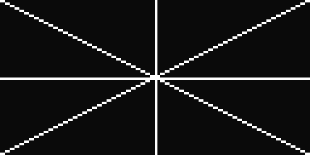
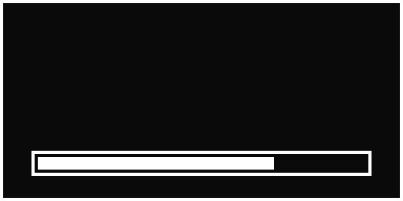
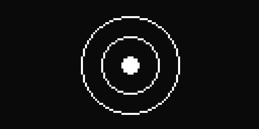
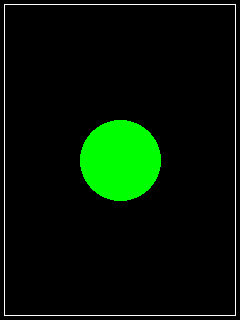
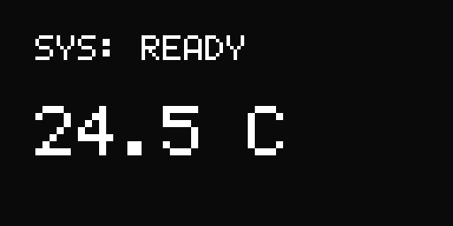
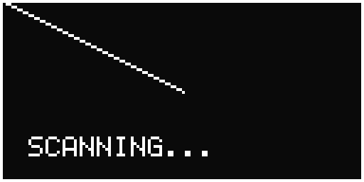

Interactive Beginner Course
Beginner guide to Glyph
An embedded-first introduction to 2D graphics in Ada 2022 on the RP2040. Every lesson uses real display drivers (SSD1306 OLED and ILI9341 color TFT), complete copy-pasteable programs, and hardware explanations.
Hardware Setup: The lessons use a Raspberry Pi Pico (RP2040) with an SSD1306 OLED on I2C (SDA=GP8, SCL=GP9) and an ILI9341 color TFT on SPI (SCK=GP18, MOSI=GP19, CS=GP17, DC=GP20, RST=GP21). All code also runs identically in the desktop simulator.
1. SSD1306 Display Initialization (RP2040 I2C)
In Glyph, you interact directly with display driver instances. For a monochrome 128x64 OLED, use Glyph.Display.SSD1306.
The Mental Model: We configure the RP2040's hardware I2C port, initialize the display driver, clear its in-memory buffer, and flush it to the screen with OLED.Render.
with RP.GPIO;
with RP.I2C_Master;
with RP.Device;
with Glyph.Display.SSD1306;
procedure Lesson_1 is
I2C : RP.I2C_Master.I2C_Master_Port renames RP.Device.I2CM_0;
SDA : RP.GPIO.GPIO_Point renames RP.Device.GP8;
SCL : RP.GPIO.GPIO_Point renames RP.Device.GP9;
OLED : Glyph.Display.SSD1306.Display_T := Glyph.Display.SSD1306.Create;
begin
-- Configure I2C pins with internal pull-ups
SDA.Configure (RP.GPIO.Output, RP.GPIO.Pull_Up, RP.GPIO.I2C, Schmitt => True);
SCL.Configure (RP.GPIO.Output, RP.GPIO.Pull_Up, RP.GPIO.I2C, Schmitt => True);
I2C.Configure (Baudrate => 400_000);
-- Connect OLED to I2C peripheral (defaults to address 0x3C)
OLED.Init (I2C'Access);
-- Clear the screen buffer and push to hardware
OLED.Clear;
OLED.Render;
end Lesson_1;Line-by-Line Breakdown:
Glyph.Display.SSD1306.Create(...): Creates the SSD1306 display instance with its internal 1,024-byte framebuffer allocated statically with zero heap usage.OLED.Init (I2C'Access): Transmits the SSD1306 initialization sequence (charge pump enable, display on, page addressing) over the RP2040 I2C bus.OLED.Clear: Clears the display framebuffer to black.OLED.Render: Transmits the framebuffer over I2C to the OLED controller.
Exercise 1: Initialize and verify clear screen
Add a delay before and after clearing to see the screen initialize cleanly on boot:
RP.Device.Timer.Delay_Milliseconds (50);
OLED.Clear;
OLED.Render;2. Plotting Pixels & Clipping Safety
The smallest unit of output is a pixel. Use OLED.Paint_Pixel to illuminate individual pixels at any (X, Y) coordinate.
Automatic Clipping: On a 128x64 display, valid X is 0 .. 127 and Y is 0 .. 63. If your code calculates an out-of-bounds coordinate (like X => 200, Y => 90), Glyph automatically clips it safely without memory corruption or microcontroller hard faults.
with RP.GPIO;
with RP.I2C_Master;
with RP.Device;
with Glyph.Display.SSD1306;
procedure Lesson_2 is
I2C : RP.I2C_Master.I2C_Master_Port renames RP.Device.I2CM_0;
SDA : RP.GPIO.GPIO_Point renames RP.Device.GP8;
SCL : RP.GPIO.GPIO_Point renames RP.Device.GP9;
OLED : Glyph.Display.SSD1306.Display_T :=
Glyph.Display.SSD1306.Create;
begin
SDA.Configure (RP.GPIO.Output, RP.GPIO.Pull_Up, RP.GPIO.I2C, Schmitt => True);
SCL.Configure (RP.GPIO.Output, RP.GPIO.Pull_Up, RP.GPIO.I2C, Schmitt => True);
I2C.Configure (Baudrate => 400_000);
OLED.Init (I2C'Access);
OLED.Clear;
-- Plot the 4 corners of the OLED
OLED.Paint_Pixel (X => 0, Y => 0);
OLED.Paint_Pixel (X => 127, Y => 0);
OLED.Paint_Pixel (X => 0, Y => 63);
OLED.Paint_Pixel (X => 127, Y => 63);
-- Out-of-bounds coordinates are safely ignored by the clipping engine
OLED.Paint_Pixel (X => 250, Y => 90);
OLED.Render;
end Lesson_2;Exercise 2: Plot a dotted line across the middle
Use a loop to plot every other pixel along row Y = 32:
for X in 0 .. 63 loop
OLED.Paint_Pixel (X => X * 2, Y => 32);
end loop;
OLED.Render;3. Lines & Bresenham Rasterization
Draw lines with OLED.Paint_Line. Glyph implements pure integer Bresenham line stepping with automatic fast orthogonal bypass for horizontal and vertical lines.
with RP.GPIO;
with RP.I2C_Master;
with RP.Device;
with Glyph.Display.SSD1306;
procedure Lesson_3 is
I2C : RP.I2C_Master.I2C_Master_Port renames RP.Device.I2CM_0;
SDA : RP.GPIO.GPIO_Point renames RP.Device.GP8;
SCL : RP.GPIO.GPIO_Point renames RP.Device.GP9;
OLED : Glyph.Display.SSD1306.Display_T := Glyph.Display.SSD1306.Create;
begin
SDA.Configure (RP.GPIO.Output, RP.GPIO.Pull_Up, RP.GPIO.I2C, Schmitt => True);
SCL.Configure (RP.GPIO.Output, RP.GPIO.Pull_Up, RP.GPIO.I2C, Schmitt => True);
I2C.Configure (Baudrate => 400_000);
OLED.Init (I2C'Access);
OLED.Clear;
-- Draw an 'X' across the screen
OLED.Paint_Line (X1 => 0, Y1 => 0, X2 => 127, Y2 => 63);
OLED.Paint_Line (X1 => 127, Y1 => 0, X2 => 0, Y2 => 63);
-- Horizontal and vertical crosshairs (uses fast bitwise fill)
OLED.Paint_Line (X1 => 0, Y1 => 32, X2 => 127, Y2 => 32);
OLED.Paint_Line (X1 => 64, Y1 => 0, X2 => 64, Y2 => 63);
OLED.Render;
end Lesson_3;
Exercise 3: Draw a diagonal grid
Draw diagonal hatch lines across the display:
for Offset in 0 .. 5 loop
OLED.Paint_Line (Offset * 25, 0, 0, Offset * 12);
end loop;
OLED.Render;4. Rectangles & Progress Meters
Glyph provides OLED.Paint_Rectangle for outline frames and OLED.Paint_Filled_Rectangle for solid bars and meters.
with RP.GPIO;
with RP.I2C_Master;
with RP.Device;
with Glyph.Display.SSD1306;
procedure Lesson_4 is
I2C : RP.I2C_Master.I2C_Master_Port renames RP.Device.I2CM_0;
SDA : RP.GPIO.GPIO_Point renames RP.Device.GP8;
SCL : RP.GPIO.GPIO_Point renames RP.Device.GP9;
OLED : Glyph.Display.SSD1306.Display_T := Glyph.Display.SSD1306.Create;
begin
SDA.Configure (RP.GPIO.Output, RP.GPIO.Pull_Up, RP.GPIO.I2C, Schmitt => True);
SCL.Configure (RP.GPIO.Output, RP.GPIO.Pull_Up, RP.GPIO.I2C, Schmitt => True);
I2C.Configure (Baudrate => 400_000);
OLED.Init (I2C'Access);
OLED.Clear;
-- Border frame around the whole display (128x64)
OLED.Paint_Rectangle (0, 0, 128, 64);
-- Progress bar outline
OLED.Paint_Rectangle (10, 48, 108, 8);
-- Filled progress bar (75 pixels filled, 4 pixels tall)
OLED.Paint_Filled_Rectangle (12, 50, 75, 4);
OLED.Render;
end Lesson_4;
Exercise 4: Draw concentric picture frames
Draw three nested frames spaced 4 pixels apart:
for Inset in 0 .. 2 loop
OLED.Paint_Rectangle
(X => Inset * 4,
Y => Inset * 4,
Width => 128 - (Inset * 8),
Height => 64 - (Inset * 8));
end loop;
end loop;
OLED.Render;5. Circles, Arcs & Gauges
Render circles and gauges with OLED.Paint_Circle and OLED.Paint_Filled_Circle using the midpoint circle algorithm with zero floating-point operations.
with RP.GPIO;
with RP.I2C_Master;
with RP.Device;
with Glyph.Display.SSD1306;
procedure Lesson_5 is
I2C : RP.I2C_Master.I2C_Master_Port renames RP.Device.I2CM_0;
SDA : RP.GPIO.GPIO_Point renames RP.Device.GP8;
SCL : RP.GPIO.GPIO_Point renames RP.Device.GP9;
OLED : Glyph.Display.SSD1306.Display_T := Glyph.Display.SSD1306.Create;
begin
SDA.Configure (RP.GPIO.Output, RP.GPIO.Pull_Up, RP.GPIO.I2C, Schmitt => True);
SCL.Configure (RP.GPIO.Output, RP.GPIO.Pull_Up, RP.GPIO.I2C, Schmitt => True);
I2C.Configure (Baudrate => 400_000);
OLED.Init (I2C'Access);
OLED.Clear;
-- Concentric radar rings
OLED.Paint_Circle (Center_X => 64, Center_Y => 32, Radius => 24);
OLED.Paint_Circle (Center_X => 64, Center_Y => 32, Radius => 14);
-- Solid center hub
OLED.Paint_Filled_Circle (Center_X => 64, Center_Y => 32, Radius => 4);
OLED.Render;
end Lesson_5;
Exercise 5: Draw a moon crescent
Draw a filled circle, then erase an overlapping part to make a crescent:
OLED.Paint_Filled_Circle (64, 32, 18);
OLED.Paint_Filled_Circle (70, 28, 16, Color => Glyph.Colors.Off);
OLED.Render;6. ILI9341 240x320 SPI Color TFT
For high-resolution 16-bit color displays, Glyph provides Glyph.Display.ILI9341. A full 240x320 frame buffer would consume 153.6 KB of RAM, but Glyph's transparent Tile_Stream mode renders in compact 32-row bands using only 15 KB of RAM!
with RP.GPIO;
with RP.SPI;
with RP.Device;
with Glyph.Display.ILI9341;
with Glyph.Colors;
procedure Lesson_6 is
SPI : RP.SPI.SPI_Port renames RP.Device.SPI_0;
SCK : RP.GPIO.GPIO_Point renames RP.Device.GP18;
MOSI : RP.GPIO.GPIO_Point renames RP.Device.GP19;
MISO : RP.GPIO.GPIO_Point renames RP.Device.GP16;
CS : RP.GPIO.GPIO_Point renames RP.Device.GP17;
DC : RP.GPIO.GPIO_Point renames RP.Device.GP20;
Reset : RP.GPIO.GPIO_Point renames RP.Device.GP21;
TFT : Glyph.Display.ILI9341.Display_T := Glyph.Display.ILI9341.Create;
begin
-- Configure SPI pins
SCK.Configure (RP.GPIO.Output, RP.GPIO.Floating, RP.GPIO.SPI);
MOSI.Configure (RP.GPIO.Output, RP.GPIO.Floating, RP.GPIO.SPI);
MISO.Configure (RP.GPIO.Input, RP.GPIO.Floating, RP.GPIO.SPI);
CS.Configure (RP.GPIO.Output, RP.GPIO.Floating, RP.GPIO.SIO);
DC.Configure (RP.GPIO.Output, RP.GPIO.Floating, RP.GPIO.SIO);
Reset.Configure (RP.GPIO.Output, RP.GPIO.Floating, RP.GPIO.SIO);
SPI.Configure
((Role => RP.SPI.Master, Baud => 16_000_000, others => <>));
TFT.Init (SPI => SPI'Access, DC => DC'Access, CS => CS'Access, Reset => Reset'Access);
-- Draw directly with dot notation
TFT.Clear (Glyph.Colors.Black);
TFT.Paint_Rectangle (4, 4, 232, 312, Color => Glyph.Colors.White);
TFT.Paint_Filled_Circle (120, 160, 40, Color => 16#07E0#); -- Green
TFT.Render;
end Lesson_6;
7. Color Shapes & Filled Triangles
Render arbitrary 3-point polygons and color shapes on ILI9341 with Paint_Triangle and Paint_Filled_Triangle:
-- Inside your ILI9341 draw procedure:
procedure Draw_Dashboard (Disp : in out Glyph.Display.ILI9341.Display_T) is
C_Red : constant Glyph.Colors.RGB565 := 16#F800#;
C_Cyan : constant Glyph.Colors.RGB565 := 16#07FF#;
begin
Disp.Clear (Glyph.Colors.Black);
-- Upward warning indicator triangle
Disp.Paint_Filled_Triangle
(X1 => 120, Y1 => 40,
X2 => 80, Y2 => 110,
X3 => 160, Y3 => 110,
Color => C_Red);
-- Horizontal meter underline
Disp.Paint_Line (20, 130, 220, 130, Color => C_Cyan);
end Draw_Dashboard;8. Text & Bitmap Fonts
Render ASCII strings directly onto displays using Paint_Text. Glyph provides the crisp Font_5x7 font built-in.
with RP.GPIO;
with RP.I2C_Master;
with RP.Device;
with Glyph.Display.SSD1306;
procedure Lesson_8 is
I2C : RP.I2C_Master.I2C_Master_Port renames RP.Device.I2CM_0;
SDA : RP.GPIO.GPIO_Point renames RP.Device.GP8;
SCL : RP.GPIO.GPIO_Point renames RP.Device.GP9;
OLED : Glyph.Display.SSD1306.Display_T := Glyph.Display.SSD1306.Create;
begin
SDA.Configure (RP.GPIO.Output, RP.GPIO.Pull_Up, RP.GPIO.I2C, Schmitt => True);
SCL.Configure (RP.GPIO.Output, RP.GPIO.Pull_Up, RP.GPIO.I2C, Schmitt => True);
I2C.Configure (Baudrate => 400_000);
OLED.Init (I2C'Access);
OLED.Clear;
-- Standard 5x7 ASCII text
OLED.Paint_Text (X => 10, Y => 10, Text => "SYS: READY");
-- Scaled 2x text (10x14 pixels per character)
OLED.Paint_Text (X => 10, Y => 30, Text => "24.5 C", Scale => 2);
OLED.Render;
end Lesson_8;
9. RP2040 Hardware Timer Animation Loop
Combine primitives and the RP2040 microsecond hardware timer (RP.Device.Timer) to produce clean, jitter-free 30 FPS animations:
with RP.GPIO;
with RP.I2C_Master;
with RP.Device;
with RP.Device.Timer;
with Glyph.Display.SSD1306;
procedure Lesson_9 is
I2C : RP.I2C_Master.I2C_Master_Port renames RP.Device.I2CM_0;
SDA : RP.GPIO.GPIO_Point renames RP.Device.GP8;
SCL : RP.GPIO.GPIO_Point renames RP.Device.GP9;
OLED : Glyph.Display.SSD1306.Display_T := Glyph.Display.SSD1306.Create;
Frame : Natural := 0;
begin
SDA.Configure (RP.GPIO.Output, RP.GPIO.Pull_Up, RP.GPIO.I2C, Schmitt => True);
SCL.Configure (RP.GPIO.Output, RP.GPIO.Pull_Up, RP.GPIO.I2C, Schmitt => True);
I2C.Configure (Baudrate => 400_000);
OLED.Init (I2C'Access);
loop
OLED.Clear;
-- Animate a sweeping radar line
declare
Sweep_X : constant Integer := (Frame * 4) mod 128;
begin
OLED.Paint_Line (64, 32, Sweep_X, 0);
end;
OLED.Paint_Rectangle (0, 0, 128, 64);
OLED.Paint_Text (10, 48, "SCANNING...");
OLED.Render;
Frame := Frame + 1;
RP.Device.Timer.Delay_Milliseconds (33); -- ~30 FPS
end loop;
end Lesson_9;